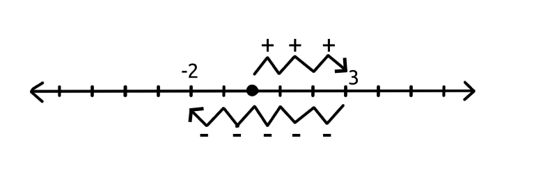

Subtraction
Almost everything in math can be summed up as addition. For example, subtraction.
This is the number line. It's worth noting that this could be written also with the negatives being on the right, and the positives on the left, however it is believed that man tilts his head towards the future naturally on the right, and towards the past on the left. Due to this apparent split in man's two sides, the left is seen as the "sinister" (that is the word for left in Latin, in fact) direction, and the right as the "dexter", fortunate.
To subtract can be said to be to add movement to the opposite direction from the positive.
In the above image, you see three units of movement to the right as we add three, and five units to the left as we add minus five/subtract five.
This is 0+3+(-5), or, 0+3-5, the result being minus two, one of the negative integers, as opposed to the so far positive natural number integers and the neutral zero.
Adding by zero and subtracting by zero are the same thing.
You can try subtracting five from seven, and writing this process on a number line. A few more exercises: 2+9; 5-11; 0-2; (2)(2+1). You can also practice, if you can think of someone who would like to hear it, explaining how to add and subtract with a number line. "I am doing an exercise about explaining how..." - This kind of "explaining to a partner" exercise can be found in many great textbooks.
Answers
1. -2; 11; -6; -2; 6.